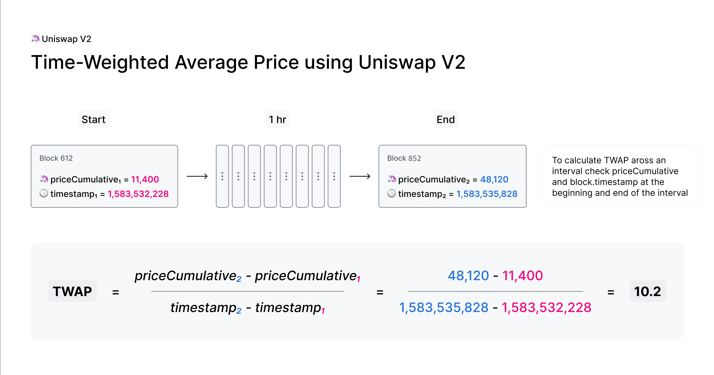

Uniswap V2 TWAP 预言机（数学推导 & 源码解读）¶
约 3547 个字 247 行代码 1 张图片 预计阅读时间 15 分钟
前言 ¶
在 DeFi 世界中，" 价格 " 是一切的基础。借贷协议需要知道抵押品值多少钱，稳定币需要锚定目标价格，衍生品需要准确的结算价格。但区块链是一个封闭的系统，智能合约无法直接获取外部世界的价格数据。
Uniswap 作为最大的去中心化交易所，天然积累了海量的交易数据。如果能把 Uniswap 的价格数据提供给其他协议使用，岂不是一举两得？
问题在于：如何安全地提供这个价格？
Uniswap V1 的做法很直接——直接读取当前储备量比例。但这种瞬时价格（Spot Price）极易被操纵。Uniswap V2 引入了 TWAP（Time-Weighted Average Price，时间加权平均价格）机制，从根本上解决了这个问题。
本文将带你从零开始，彻底理解 TWAP 的设计动机、实现原理、数学推导，并结合源码进行分析。
第一章：为什么 V1 的瞬时价格不安全 ¶
1.1 瞬时价格的计算方式 ¶
在 Uniswap 中，价格由池子里两种代币的储备量比例决定。假设一个 ETH/USDC 池子有：
reserve0= 100 ETHreserve1= 200,000 USDC
那么 ETH 的瞬时价格就是：
这个计算看起来很合理，但有一个致命问题：储备量可以在一笔交易内被大幅改变。
1.2 闪电贷攻击原理 ¶
闪电贷（Flash Loan）是 DeFi 的一个神奇发明：你可以在没有任何抵押品的情况下借出巨额资金，唯一的条件是必须在同一笔交易结束前归还。如果还不上，整笔交易就会回滚，就像什么都没发生过一样。
攻击者可以利用闪电贷来操纵 Uniswap 的瞬时价格：
一笔原子交易内发生的事情：
1. 从 Aave 借出 1,000,000 USDC（闪电贷，零抵押）
2. 用 1,000,000 USDC 在 Uniswap 买入 ETH
→ 池子里 USDC 暴增，ETH 骤减
→ ETH 瞬时价格被推高到 10,000 USDC/ETH
3. 调用受害协议（比如一个借贷平台）
→ 受害协议读取 Uniswap 瞬时价格 = 10,000 USDC/ETH
→ 攻击者的 ETH 抵押品被高估，借出超额资金
4. 把 ETH 卖回 Uniswap，换回 USDC
→ 价格恢复正常
5. 归还闪电贷本金 + 利息
→ 攻击者净赚受害协议的超额借款
整个过程在一笔交易内完成，攻击者零成本、零风险。如果攻击失败，交易回滚，攻击者只损失一点 gas 费。
1.3 真实案例 ¶
这不是理论威胁。历史上发生过多起利用瞬时价格的攻击：
| 事件 | 时间 | 损失金额 |
|---|---|---|
| bZx 攻击 | 2020 年 2 月 | $954,000 |
| Harvest Finance | 2020 年 10 月 | $33,800,000 |
| Mango Markets | 2022 年 10 月 | $117,000,000 |
核心问题在于：瞬时价格反映的是 " 这一刻 " 的储备量比例，而这一刻可以被攻击者完全控制。
1.4 问题的本质 ¶
让我们从更高的视角来理解这个问题：
- 瞬时价格是 " 点 " 数据：只反映某一瞬间的状态
- 闪电贷让攻击成本为零：攻击者不需要真正持有资金
- 原子性让攻击无风险：操纵和获利在同一笔交易内完成
要解决这个问题，我们需要的是一种" 线 " 数据——不是某一瞬间的价格，而是一段时间内的平均价格。这就是 TWAP 的核心思想。
第二章：TWAP 的核心设计思想 ¶
2.1 什么是时间加权平均价格 ¶
TWAP 的全称是 Time-Weighted Average Price，瞬时间加权平均价格。它计算的是一段时间内价格的平均值，而且每个价格点的权重取决于它持续的时间长度。
举个简单的例子：
时间段 价格 持续时间
────────────────────────────────────
0-8 小时 2,000 USDC/ETH 8 小时
8-16 小时 2,100 USDC/ETH 8 小时
16-24 小时 1,900 USDC/ETH 8 小时
TWAP 的计算方式：
TWAP = (2000 × 8 + 2100 × 8 + 1900 × 8) / (8 + 8 + 8)
= (16000 + 16800 + 15200) / 24
= 48000 / 24
= 2000 USDC/ETH
每个价格按其持续时间加权，最终得到一个平均值。
2.2 为什么 TWAP 能抵御操纵 ¶
TWAP 的安全性来自两个关键设计：
设计一：记录每个区块开始时的价格
Uniswap V2 不是在交易发生时记录价格，而是在每个区块的第一笔交易之前记录价格。这意味着被记录的价格是上一个区块结束时的价格。
累积价格更新时间：只在每个区块第一次交互时，把 " 上一块的价格 × 经过的时间 " 累加进去。
为什么这很重要？因为攻击者如果想操纵这个价格，必须在上一个区块的最后进行操纵交易。但是：
- 攻击者无法保证自己的交易是区块的最后一笔
- 即使操纵成功，套利者可以在下一个区块开始时立即纠正价格
- 攻击者必须承担真实的资金损失（支付交易费用、承受价格滑点）
设计二：使用累加器而非快照
Uniswap V2 不是存储历史价格快照，而是维护一个 " 累加器 "（Accumulator
每次有交易时，合约会把 " 当前价格 × 距离上次更新的秒数 " 加到累加器上。
要计算 TWAP，外部合约只需要： 1. 在时间点 t1 记录累加器的值 A1 2. 在时间点 t2 记录累加器的值 A2 3. 计算 TWAP = (A2 - A1) / (t2 - t1)
简单点说就是：V2 不是直接提供“当前价格”，而是维护一个随时间累加的价格和，然后让外部自己算“时间加权平均价格（TWAP）”。
2.3 操纵 TWAP 的经济成本 ¶
假设攻击者想把 1 小时 TWAP 操纵 5%。他需要：
- 在每个区块都进行操纵交易
- 持续整整一个小时（约 300 个区块，按 12 秒一个区块算）
- 每次操纵后都会被套利者纠正，每次都要亏钱
Uniswap 官方文档给出的估算：
将 1 小时 TWAP 移动 5%，大约等于在这 1 小时内每个区块都把价格移动 5% 所损失的套利成本和手续费之和。
对于流动性充足的池子（比如 ETH/USDC
2.4 小结 ¶
| 对比项 | 瞬时价格 | TWAP |
|---|---|---|
| 数据维度 | 点（瞬时） | 线（时间段） |
| 闪电贷攻击 | 容易 | 无效 |
| 操纵成本 | 接近零 | 极高 |
| 操纵时间 | 瞬间 | 需持续整个平均窗口 |
| 价格延迟 | 无 | 有（取决于窗口大小） |
TWAP 用 " 时间 " 作为武器，把攻击从 " 零成本、零风险 " 变成了 " 高成本、高风险 "。
第三章：TWAP 的数学推导 ¶
本章将从数学角度严格推导 TWAP 的计算公式，帮助你理解 Uniswap V2 累加器机制背后的数学原理。
3.1 模型设定：价格是 " 阶梯函数 " ¶
假设价格在时间轴上按区间分段保持不变：
- 时间节点：\(t_0 = 0 < t_1 < t_2 < \cdots < t_n\)
- 在区间 \([t_{i-1}, t_i]\) 上，价格都是常数 \(P_i\)
3.2 整个区间 \([0, t_n]\) 的时间加权平均价 ¶
时间加权平均价定义：" 价格 × 持续时间 " 的加权和，除以总时间。
计算 \([0, t_n]\) 时间段的 TWAP：
用求和符号表示：
3.3 子区间 \([t_j, t_k]\) 的时间加权平均价 ¶
从 \(t_j\) 到 \(t_k\)（其中 \(0 \le j < k \le n\)）的 TWAP：
用求和符号表示：
又因为：
把它代回 \((\star)\)：
3.4 定义累积价格 \(a(t)\)，得到 Uniswap V2 的形式 ¶
现在我们引入一个 " 累积价格 " 的函数 \(a(t_k)\)：
\(a(t_k)\) 表示：截至时间 \(t_k\) 的累积价格（price cumulative
特别地：
那上面的式子就可以简化为：
时间区间 \([t_j, t_k]\) 的 TWAP =（区间末尾时的累计价格 − 区间起点时的累计价格） ÷ 时间差。
在 Uniswap V2 里：
price0CumulativeLast就是我们刚才定义的那个 \(a(t_k)\)timestamp就是对应的 \(t_k\)
某个外部合约：
- 在时间 \(t_1\) 记录：\(priceCumulative_1 = a(t_1)\)，\(timestamp_1 = t_1\)
- 在时间 \(t_2\) 再记录：\(priceCumulative_2 = a(t_2)\)，\(timestamp_2 = t_2\)
- 就可以算出这段时间的 TWAP：

来源：https://docs.uniswap.org/contracts/v2/concepts/core-concepts/oracles
3.5 用积分形式理解累加器 ¶
设在时间 \(t\)，池子的瞬时价格为 \(P(t)\)。Uniswap V2 的累加器可以用积分形式定义为：
用离散的方式理解：如果价格在时间段 \([t_1, t_2]\) 内保持为 \(P\)，那么这段时间对累加器的贡献就是：
累加器 \(A(t)\) 就是从合约部署至今，所有 " 价格 × 持续时间 " 的累加和。
3.6 从累加器计算 TWAP ¶
假设我们想计算从 \(t_1\) 到 \(t_2\) 这段时间的 TWAP：
让我们验证这个公式的正确性。假设在 \([t_1, t_2]\) 内，价格变化如下：
那么：
这正是时间加权平均价格的标准定义！
3.7 为什么需要两个累加器 ¶
Uniswap V2 维护了两个累加器：
price0CumulativeLast：token1/token0 的累加器（token0 的价格，以 token1 计价）price1CumulativeLast：token0/token1 的累加器（token1 的价格，以 token0 计价）
为什么不能只存一个，用的时候取倒数呢？
因为算术平均的倒数 ≠ 倒数的算术平均。
举例：
区块 1：ETH/USDC = 2000（即 1 ETH = 2000 USDC）
区块 2：ETH/USDC = 3000（即 1 ETH = 3000 USDC）
ETH/USDC 的算术平均 = (2000 + 3000) / 2 = 2500
USDC/ETH 在区块 1 = 1/2000 = 0.0005
USDC/ETH 在区块 2 = 1/3000 = 0.000333...
USDC/ETH 的算术平均 = (0.0005 + 0.000333) / 2 = 0.000417
但 1/2500 = 0.0004 ≠ 0.000417
数学上，比率的算术平均的倒数等于反向比率的调和平均，而非算术平均。所以必须分别跟踪两个方向的累加器。
3.8 UQ112.112 定点数格式 ¶
Solidity 不支持浮点数，但价格比率（如 2000.5）需要表示小数。Uniswap V2 使用 UQ112.112 格式：
- U：无符号（Unsigned）
- Q：定点数表示法（Q notation）
- 112.112：112 位整数部分 + 112 位小数部分
┌─────────────────────────────────────────────────────────────┐
│ 112 位整数部分 │ 112 位小数部分 │
│ (最大约 5.19 × 10³³) │ (精度约 1.93 × 10⁻³⁴) │
└─────────────────────────────────────────────────────────────┘
共 224 位
转换方法：
为什么选择 112 位？这是一个精心的工程设计：
- reserve0（uint112）+ reserve1（uint112）+ timestamp（uint32）= 256 位
- 刚好可以打包进一个存储槽（storage slot
） ，节省 gas
详细内容，参考上一篇文档：Uniswap V2 价格精度解析
3.9 溢出处理 ¶
累加器是 uint256，会不会溢出？答案是：会溢出，而且这是故意设计的。
因为我们关心的不是累加器的绝对值，而是两次读数的差值。只要两次读数的间隔不超过溢出周期，差值计算就是正确的。
这是利用了 Solidity 无符号整数的模运算特性。
类似地，时间戳用 uint32 存储，会在 2106 年溢出。但只要两次读数间隔不超过 136 年，差值计算就没问题：
第四章：源码深度分析 ¶
4.1 核心存储变量 ¶
在 UniswapV2Pair.sol 中，与 TWAP 相关的存储变量定义如下：
// 储备量，使用 uint112 以便与时间戳一起打包
uint112 private reserve0; // token0 上次记录的储备
uint112 private reserve1; // token1 上次记录的储备
uint32 private blockTimestampLast; // 上次更新的区块时间戳（mod 2^32）
// 累加器，使用 uint256 允许溢出
uint public price0CumulativeLast; // 累积的 price(token0 in token1)
uint public price1CumulativeLast; // 累积的 price(token1 in token0)
存储布局优化：
Storage Slot 0:
┌──────────────────────────────────────────────────────────────────┐
│ reserve0 (112 bits) │ reserve1 (112 bits) │ timestamp (32 bits) │
└──────────────────────────────────────────────────────────────────┘
Storage Slot 1: price0CumulativeLast (256 bits)
Storage Slot 2: price1CumulativeLast (256 bits)
读取 reserve0、reserve1 和 blockTimestampLast 只需要一次 SLOAD 操作（约 2100 gas
4.2 UQ112x112 库 ¶
// contracts/libraries/UQ112x112.sol
library UQ112x112 {
uint224 constant Q112 = 2**112;
// 将 uint112 编码为 UQ112.112
function encode(uint112 y) internal pure returns (uint224 z) {
z = uint224(y) * Q112; // 左移 112 位
}
// UQ112.112 除以 uint112，结果仍为 UQ112.112
function uqdiv(uint224 x, uint112 y) internal pure returns (uint224 z) {
z = x / uint224(y);
}
}
使用示例：
假设 reserve1 = 200000，reserve0 = 100
1. encode(200000) = 200000 × 2¹¹² = 一个很大的数
2. uqdiv(上述结果, 100) = (200000 × 2¹¹²) / 100 = 2000 × 2¹¹²
最终 price0 以 UQ112.112 格式存储，代表价格 2000
4.3 _update() 函数：TWAP 的心脏 ¶
// contracts/UniswapV2Pair.sol
function _update(uint balance0, uint balance1, uint112 _reserve0, uint112 _reserve1) private {
// 确保余额不会溢出 uint112
require(balance0 <= uint112(-1) && balance1 <= uint112(-1), 'UniswapV2: OVERFLOW');
// 获取当前区块时间戳，模 2^32 只取低位（允许溢出，因为我们只关心时间差）
uint32 blockTimestamp = uint32(block.timestamp % 2**32);
// 计算距离上次更新的时间（溢出是期望的）
uint32 timeElapsed = blockTimestamp - blockTimestampLast; // overflow is desired
// 如果是该区块内的第一次操作（timeElapsed > 0），且池子内有流动性，则更新价格累加器
if (timeElapsed > 0 && _reserve0 != 0 && _reserve1 != 0) {
// * never overflows, and + overflow is desired
// 价格计算使用 UQ112x112 库进行定点数运算，保证精度
// price0 = reserve1 / reserve0（token0 的价格，以 token1 计价）
price0CumulativeLast += uint(UQ112x112.encode(_reserve1).uqdiv(_reserve0)) * timeElapsed;
// price1 = reserve0 / reserve1（token1 的价格，以 token0 计价）
price1CumulativeLast += uint(UQ112x112.encode(_reserve0).uqdiv(_reserve1)) * timeElapsed;
}
// 更新储备量和时间戳
reserve0 = uint112(balance0);
reserve1 = uint112(balance1);
blockTimestampLast = blockTimestamp;
emit Sync(reserve0, reserve1);
}
让我们逐步理解这段代码：
步骤 1：溢出检查
uint112(-1) 在 Solidity 中是一个技巧：将 -1 转为无符号整数会得到该类型的最大值（\(2^{112} - 1\)
步骤 2-3：时间处理
uint32 blockTimestamp = uint32(block.timestamp % 2**32);
uint32 timeElapsed = blockTimestamp - blockTimestampLast;
时间戳被截断为 32 位，会在约 136 年后（2106 年）溢出回绕。减法在溢出时仍然正确：
假设 blockTimestampLast = 4,294,967,290（接近 uint32 最大值）
假设 blockTimestamp = 5（已经溢出回绕）
timeElapsed = 5 - 4,294,967,290
= 5 + (2³² - 4,294,967,290) // 无符号下溢变成加法
= 11 ✓ 正确的时间差
步骤 4：累加器更新
if (timeElapsed > 0 && _reserve0 != 0 && _reserve1 != 0) {
price0CumulativeLast += uint(UQ112x112.encode(_reserve1).uqdiv(_reserve0)) * timeElapsed;
price1CumulativeLast += uint(UQ112x112.encode(_reserve0).uqdiv(_reserve1)) * timeElapsed;
}
关键点：
- timeElapsed > 0：确保同一个区块内只更新一次累加器
- 使用旧的储备量 _reserve0 和 _reserve1：这是区块开始时的价格，在任何交易之前
- 累加器加法允许溢出：注释 + overflow is desired 说明这是有意为之
价格计算分解：
price0 的计算步骤：
1. UQ112x112.encode(_reserve1) → _reserve1 × 2¹¹²
2. .uqdiv(_reserve0) → (_reserve1 × 2¹¹²) / _reserve0
3. × timeElapsed → 乘以经过的秒数
4. += 到累加器 → 累加到总和
步骤 5：状态更新
注意顺序：累加器使用旧的储备量计算完成后，才更新为新的储备量。这确保了记录的是交易之前的价格。
4.4 _update() 的调用时机 ¶
_update() 函数在以下三个地方被调用：
// 1. mint()：添加流动性时
function mint(address to) external lock returns (uint liquidity) {
// ... 计算流动性代币数量 ...
_update(balance0, balance1, _reserve0, _reserve1);
}
// 2. burn()：移除流动性时
function burn(address to) external lock returns (uint amount0, uint amount1) {
// ... 计算退还的代币数量 ...
_update(balance0, balance1, _reserve0, _reserve1);
}
// 3. swap()：交换代币时
function swap(uint amount0Out, uint amount1Out, address to, bytes calldata data) external lock {
// ... 执行交换逻辑 ...
_update(balance0, balance1, _reserve0, _reserve1);
}
只要池子有任何交互，累加器就会被更新。如果长时间没有交易，外部合约可以调用 sync() 函数来手动触发更新。
4.5 periphery 合约：UniswapV2OracleLibrary¶
UniswapV2OracleLibrary.sol 提供了一个实用函数，用于获取 " 假设现在更新 " 的累加器值：
// contracts/libraries/UniswapV2OracleLibrary.sol
library UniswapV2OracleLibrary {
using FixedPoint for *;
function currentCumulativePrices(address pair)
internal
view
returns (
uint price0Cumulative,
uint price1Cumulative,
uint32 blockTimestamp
)
{
blockTimestamp = currentBlockTimestamp();
price0Cumulative = IUniswapV2Pair(pair).price0CumulativeLast();
price1Cumulative = IUniswapV2Pair(pair).price1CumulativeLast();
// 获取储备量和上次更新时间
(uint112 reserve0, uint112 reserve1, uint32 blockTimestampLast) =
IUniswapV2Pair(pair).getReserves();
// 如果上次更新不在当前区块，需要"反事实地"计算累加器
if (blockTimestampLast != blockTimestamp) {
uint32 timeElapsed = blockTimestamp - blockTimestampLast;
// 模拟 _update() 的累加逻辑
price0Cumulative += uint(
FixedPoint.fraction(reserve1, reserve0)._x
) * timeElapsed;
price1Cumulative += uint(
FixedPoint.fraction(reserve0, reserve1)._x
) * timeElapsed;
}
}
}
为什么需要这个函数？
假设池子在 10 分钟前有过交易，之后就没有活动了。如果你直接读取 price0CumulativeLast，得到的是 10 分钟前的值。但你想计算到 " 现在 " 为止的 TWAP。
这个函数不修改状态（是 view 函数
4.6 示例合约：ExampleOracleSimple¶
Uniswap 提供了一个简单的 TWAP 预言机示例：
// contracts/examples/ExampleOracleSimple.sol
contract ExampleOracleSimple {
using FixedPoint for *;
uint public constant PERIOD = 24 hours; // TWAP 窗口
IUniswapV2Pair immutable pair;
address public immutable token0;
address public immutable token1;
uint public price0CumulativeLast;
uint public price1CumulativeLast;
uint32 public blockTimestampLast;
FixedPoint.uq112x112 public price0Average;
FixedPoint.uq112x112 public price1Average;
constructor(address factory, address tokenA, address tokenB) public {
IUniswapV2Pair _pair = IUniswapV2Pair(
UniswapV2Library.pairFor(factory, tokenA, tokenB)
);
pair = _pair;
token0 = _pair.token0();
token1 = _pair.token1();
price0CumulativeLast = _pair.price0CumulativeLast();
price1CumulativeLast = _pair.price1CumulativeLast();
(, , blockTimestampLast) = _pair.getReserves();
}
function update() external {
(
uint price0Cumulative,
uint price1Cumulative,
uint32 blockTimestamp
) = UniswapV2OracleLibrary.currentCumulativePrices(address(pair));
uint32 timeElapsed = blockTimestamp - blockTimestampLast;
// 确保至少经过了 PERIOD 时间
require(timeElapsed >= PERIOD, 'ExampleOracleSimple: PERIOD_NOT_ELAPSED');
// 计算 TWAP
// 累加器差值 / 时间差 = 平均价格
price0Average = FixedPoint.uq112x112(
uint224((price0Cumulative - price0CumulativeLast) / timeElapsed)
);
price1Average = FixedPoint.uq112x112(
uint224((price1Cumulative - price1CumulativeLast) / timeElapsed)
);
// 更新检查点
price0CumulativeLast = price0Cumulative;
price1CumulativeLast = price1Cumulative;
blockTimestampLast = blockTimestamp;
}
// 根据输入数量计算输出数量
function consult(address token, uint amountIn)
external
view
returns (uint amountOut)
{
if (token == token0) {
amountOut = price0Average.mul(amountIn).decode144();
} else {
require(token == token1, 'ExampleOracleSimple: INVALID_TOKEN');
amountOut = price1Average.mul(amountIn).decode144();
}
}
}
使用流程：
- 部署：指定要跟踪的交易对
- 定期调用
update()：每隔 PERIOD（如 24 小时）更新一次 - 查询
consult()：输入一定数量的代币，返回按 TWAP 计算的等值数量
第五章：实际应用与权衡 ¶
5.1 TWAP 窗口期的选择 ¶
窗口期越长，安全性越高，但价格滞后越严重：
| 窗口期 | 安全性 | 价格滞后 | 适用场景 |
|---|---|---|---|
| 10 分钟 | 低 - 中 | 低 | 高频交易参考 |
| 1 小时 | 中 | 中 | 一般 DeFi 应用 |
| 24 小时 | 高 | 高 | 借贷协议、稳定币 |
操纵成本估算（以 ETH/USDC 高流动性池为例
- 10 分钟 TWAP 移动 5%：约 $50,000 - $500,000
- 1 小时 TWAP 移动 5%：约 $500,000 - $5,000,000
- 24 小时 TWAP 移动 5%：约 $50,000,000+
5.2 使用模式 ¶
模式一：固定窗口预言机
contract FixedWindowOracle {
uint public constant PERIOD = 1 hours;
uint public lastUpdateTime;
uint public lastCumulativePrice;
uint public averagePrice;
function update() external {
uint currentCumulative = getCurrentCumulativePrice();
uint timeElapsed = block.timestamp - lastUpdateTime;
require(timeElapsed >= PERIOD, "Period not elapsed");
averagePrice = (currentCumulative - lastCumulativePrice) / timeElapsed;
lastCumulativePrice = currentCumulative;
lastUpdateTime = block.timestamp;
}
}
模式二：滑动窗口预言机
存储多个检查点，可以计算任意时间段的 TWAP：
contract SlidingWindowOracle {
struct Observation {
uint timestamp;
uint priceCumulative;
}
Observation[] public observations;
function update() external {
observations.push(Observation({
timestamp: block.timestamp,
priceCumulative: getCurrentCumulativePrice()
}));
}
function getTWAP(uint lookbackSeconds) external view returns (uint) {
// 找到 lookbackSeconds 前的观察点
// 计算 TWAP
}
}
模式三：内联检查点
在用户操作时记录检查点：
contract LendingProtocol {
mapping(address => uint) public userPriceCumulativeAtDeposit;
mapping(address => uint) public userTimestampAtDeposit;
function deposit() external {
userPriceCumulativeAtDeposit[msg.sender] = getCurrentCumulativePrice();
userTimestampAtDeposit[msg.sender] = block.timestamp;
// ... 存款逻辑
}
function liquidate(address user) external {
uint currentCumulative = getCurrentCumulativePrice();
uint timeElapsed = block.timestamp - userTimestampAtDeposit[user];
uint twapPrice = (currentCumulative - userPriceCumulativeAtDeposit[user]) / timeElapsed;
// ... 使用 twapPrice 进行清算判断
}
}
5.3 注意事项 ¶
- 首次使用需要等待：刚部署的预言机没有历史数据，需要等待至少一个 PERIOD
- 需要定期维护：如果没有人调用
update()，TWAP 会变得陈旧 - 低流动性池风险：流动性越低，操纵成本越低
- 极端波动时滞后：市场剧烈波动时，TWAP 可能严重滞后于当前价格
5.4 与其他预言机的对比 ¶
| 预言机类型 | 去中心化 | 抗操纵性 | 价格实时性 | Gas 成本 |
|---|---|---|---|---|
| Uniswap V2 TWAP | ✅ 高 | ✅ 高 | ❌ 中 - 低 | ✅ 低 |
| Chainlink | ⚠️ 中 | ✅ 高 | ✅ 高 | ✅ 低 |
| Uniswap V3 TWAP | ✅ 高 | ✅ 高 | ⚠️ 中 | ✅ 低 |
| 瞬时价格 | ✅ 高 | ❌ 低 | ✅ 高 | ✅ 低 |
Uniswap V2 TWAP 的优势在于完全去中心化且链上可验证，缺点是价格存在延迟。
第六章：总结 ¶
6.1 TWAP 的核心创新 ¶
Uniswap V2 的 TWAP 预言机通过两个优雅的设计解决了价格操纵问题：
- 记录区块开始时的价格：强迫攻击者在上一个区块进行操纵，给套利者留出纠正机会
- 累加器机制：用 " 价格 × 时间 " 的累加和来计算平均价格，短暂的操纵几乎不影响结果
6.2 关键技术点回顾 ¶
| 概念 | 说明 |
|---|---|
| 累加器 | 存储 \(\sum(\text{价格} \times \text{时间})\)，通过差值计算 TWAP |
| UQ112.112 | 224 位定点数格式，112 位整数 + 112 位小数 |
| 溢出安全 | 利用模运算，溢出不影响差值计算 |
| 双向累加器 | 因为算术平均的倒数 ≠ 倒数的算术平均 |
| 存储优化 | reserve0 + reserve1 + timestamp 打包进一个 slot |
6.3 设计哲学 ¶
TWAP 的设计体现了区块链世界的一个重要原则：用经济学解决安全问题。
它没有试图阻止操纵（这在无许可系统中几乎不可能
- 使用真实资金（不能用闪电贷）
- 持续损失金钱给套利者
- 承受长时间的资金锁定风险
当攻击成本超过潜在收益时，理性的攻击者就不会发起攻击。
这种 " 用时间换安全 " 的思想，深刻影响了后来的 DeFi 协议设计，包括 Uniswap V3 的改进版 TWAP，以及各种借贷协议的价格预言机选择。
参考资料 ¶
- Uniswap V2 白皮书：https://uniswap.org/whitepaper.pdf
- Uniswap V2 官方文档 - Oracles：https://docs.uniswap.org/contracts/v2/concepts/core-concepts/oracles
- RareSkills - TWAP in Uniswap V2：https://rareskills.io/post/twap-uniswap-v2
- Uniswap V2 Core 源码：https://github.com/Uniswap/v2-core
- Uniswap V2 Periphery 源码：https://github.com/Uniswap/v2-periphery